MCMC setup¶
The Markov chain Monte Carlo algorithm implemented in the emcee package is used. This reduces the effort of implementing MCMC to defining the prior and likelihood functions, and providing some basic setup parameters for emcee.
The Seriously Kick-Ass MCMC emcee package is a pure python implementation of the Goodman & Weare’s Affine Invariant Markov chain Monte Carlo (MCMC) Ensemble sampler. The emcee package can be obtained here, and it is described in Foreman-Mackey et al. 2012.
Parameters & Observables¶
The model parameters ( ) that are used to predict the observations ( y and yerr ) are initial mass, initial metalicity and age (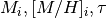). These parameters are defined as follows:
) that are used to predict the observations ( y and yerr ) are initial mass, initial metalicity and age (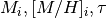). These parameters are defined as follows:
Parameter Name Unit initial mass Mass_init 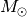 initial metalicity M_H_init dex age log_Age 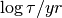
The observable parameters are effective temperature, luminosity, surface gravity, radius and metalicity. The observed metalicity can be different from the initial metalicity due to diffusion and mixing processes during the lifetime of the star. All evolution models shipped with emcmass use the same names and units for the observables, they are defined as follows:
Observable Name Unit effective temperature log_Teff luminosity log_L 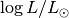 surface gravity log_g 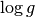 in cgs radius log_R 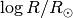 metalicity M_H [M/H]

Priors¶
emcmass uses a flat prior for all model parameters (). The log-prior function is defined as returning 0 if all parameters are within their limits and returning 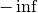 if any parameter is outside its limit.
This prior is defined in the emcmass.emcmass.lnprior() function. It takes as arguments the model parameters (), and the limits on the parameters as a list of tuples. In the following example the masses are limited between 0.1 and 2.0 Msol, metalicity between -1 and 0.25 and age between 1 Myr and 1 Gyr:
>>> limits = [(0.1, 2.0), (-1, 0.25), (6.0, 9.0)]
>>> lnprior([0.91, -0.125, 6.67], limits)
0
>>> lnprior([2.31, -0.125, 6.67], limits)
-inf
Likelihood function¶
The likelihood of observing observables y for a given model is defined as 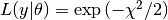, where the chi squared function is calculated as:
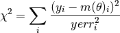
where 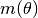 are the theoretical values for the given model parameters .
The likelihood function is defined in the emcmass.emcmass.lnlike() function. Its arguments are the model parameters , the observables y and the errors on the observables yerr. It will call the emcmass.models.interpolate() function to determine the theoretical values for the observables.
Markov chain¶
To create the Markov chains with the probability distribution 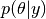, a Metropolis-Hastings jump probability distribution is used. This is also the standard setup in emcee. It is defined as follows. A trial point 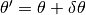 in the vicinity of the current model parameters is picked. If any of the model parameters  are outside the valid range, the point is imediatly rejected. This is achieved by the prior function returning if the model parameters are outside their limits. Otherwise, the probability of accepting the new point is given as:
are outside the valid range, the point is imediatly rejected. This is achieved by the prior function returning if the model parameters are outside their limits. Otherwise, the probability of accepting the new point is given as:
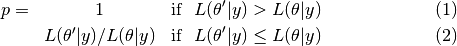
Meaning that if the likelihood of the new model is higher then the current one it is always accepted, but if it is lower the probability of accepting it depends on the fraction of the likelihoods.